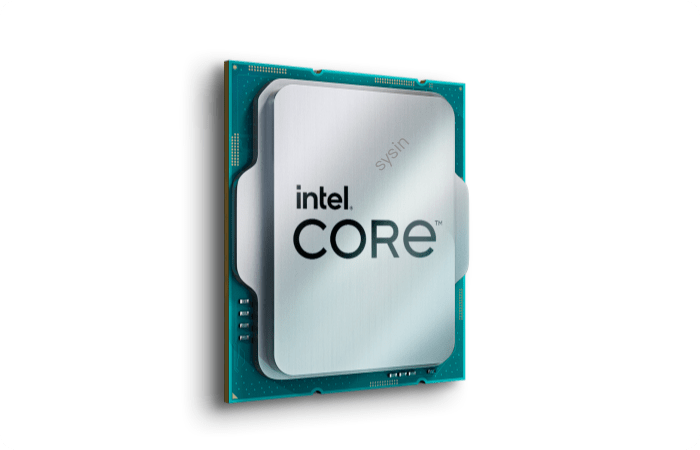

请访问原文链接：Intel 最新发布的第 14 代酷睿处理器全面支持 ESXi 8.0 查看最新版。原创作品，转载请保留出处。
作者主页：sysin.org
Intel 最新发布的第 14 代酷睿处理器全面支持 ESXi 8.0。直接上列表：

| 产品名称 | 发行日期 | 内核数 | 最大睿频频率 | 缓存 | GPU 名称 | TDP |
|---|---|---|---|---|---|---|
| 英特尔 ® 酷睿™ i9 处理器 14901KE | Q3’24 | 8 | 5.8 GHz | 36 MB Intel® Smart Cache | Intel® UHD Graphics 770 | 125W |
| 英特尔 ® 酷睿™ i9 处理器 14901E | Q3’24 | 8 | 5.6 GHz | 36 MB Intel® Smart Cache | Intel® UHD Graphics 770 | 65W |
| 英特尔 ® 酷睿™ i9 处理器 14901TE | Q3’24 | 8 | 5.5 GHz | 36 MB Intel® Smart Cache | Intel® UHD Graphics 770 | 45W |
| 英特尔 ® 酷睿™ i7 处理器 14701E | Q3’24 | 8 | 5.4 GHz | 33 MB Intel® Smart Cache | Intel® UHD Graphics 770 | 65W |
| 英特尔 ® 酷睿™ i7 处理器 14701TE | Q3’24 | 8 | 5.2 GHz | 33 MB Intel® Smart Cache | Intel® UHD Graphics 770 | 45W |
| 英特尔 ® 酷睿™ i5 处理器 14401E | Q3’24 | 6 | 4.7 GHz | 24 MB Intel® Smart Cache | Intel® UHD Graphics 730 | 65W |
| 英特尔 ® 酷睿™ i5 处理器 14401TE | Q3’24 | 6 | 4.5 GHz | 24 MB Intel® Smart Cache | Intel® UHD Graphics 730 | 45W |
| 英特尔 ® 酷睿™ i5 处理器 14501E | Q3’24 | 6 | 5.2 GHz | 24 MB Intel® Smart Cache | Intel® UHD Graphics 770 | 65W |
| 英特尔 ® 酷睿™ i5 处理器 14501TE | Q3’24 | 6 | 5.1 GHz | 24 MB Intel® Smart Cache | Intel® UHD Graphics 770 | 45W |
| 英特尔 ® 酷睿™ i3 处理器 14100 | Q1’24 | 4 | 4.7 GHz | 12 MB Intel® Smart Cache | Intel® UHD Graphics 730 | 60W |
| 英特尔 ® 酷睿™ i3 处理器 14100F | Q1’24 | 4 | 4.7 GHz | 12 MB Intel® Smart Cache | N/A | 58W |
| 英特尔 ® 酷睿™ i3 处理器 14100T | Q1’24 | 4 | 4.4 GHz | 12 MB Intel® Smart Cache | Intel® UHD Graphics 730 | 35W |
字母代号释义：E 表示 “嵌入式”，K 表示 “高性能，未锁频”，T 表示 “功耗优化”，F 表示 “无集显”。
Intel 悄然上线了多款第 14 代酷睿处理器，完全摒弃了小核（E 核），只有大核（P 核）。
这批处理器专为嵌入式和商业市场设计，编号后缀带有 “E”，与桌面版一样使用 FCLGA1700 插槽，恰巧成为运行 ESXi 8.0 的佳选 (sysin)。
Intel 此次共推出了 11 款 “01E” 系列的 14 代酷睿处理器，其中旗舰产品为 i9-14901KE，拥有 8 个 P 核心和 16 个线程，基础频率为 3.8 GHz，最大提升频率可达 5.8 GHz。
这款处理器配备了 36MB 的 L3 缓存和 16MB 的 L2 缓存，基础功耗为 125W，并且支持完全解锁的超频功能。
它们均基于 Raptor Cove P 核心架构(sysin)，但与标准版不同，这些 “E” 系列 SKU 不含任何 Gracemont E 核心。
代号名称：Products formerly Raptor Lake
更多新型号查询：
本站定制映像：
- VMware ESXi 8.0U3k macOS Unlocker & OEM BIOS 2.7 标准版和厂商定制版
- VMware ESXi 8.0U3k macOS Unlocker & OEM BIOS 2.7 集成驱动版
相关产品：
- VMware ESXi 8.0U3k 发布 - 领先的裸机 Hypervisor
- VMware vCenter Server 8.0U3k 发布 - 集中管理 vSphere 环境
- VMware vSphere 8.0 Update 3k 下载 - 企业级工作负载平台

文章用于推荐和分享优秀的软件产品及其相关技术，所有软件提供免费版或试用版。内容若侵犯了您的版权，请联系作者删除。如果您喜欢这篇文章，或者觉得它对您有所帮助，亦或发现有不当之处；欢迎发表评论，也欢迎分享这个网站，或者赞赏一下，谢谢！提示：捐赠或赞赏属于自愿赠予行为，提交后即表示您对作者的支持与认可。为避免误操作，请在确认前仔细检查金额，支付完成后将无法撤销或退还。
 支付宝赞赏
支付宝赞赏  微信赞赏
微信赞赏赞赏一下
敬请注册！点击 “登录” - “用户注册”（已知不支持 21.cn/189.cn 邮箱）。 请勿使用联合登录（已关闭）。